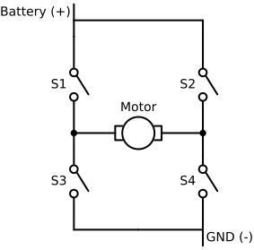
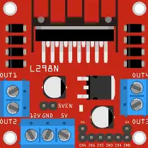
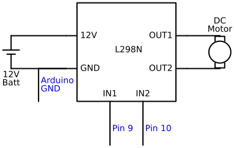
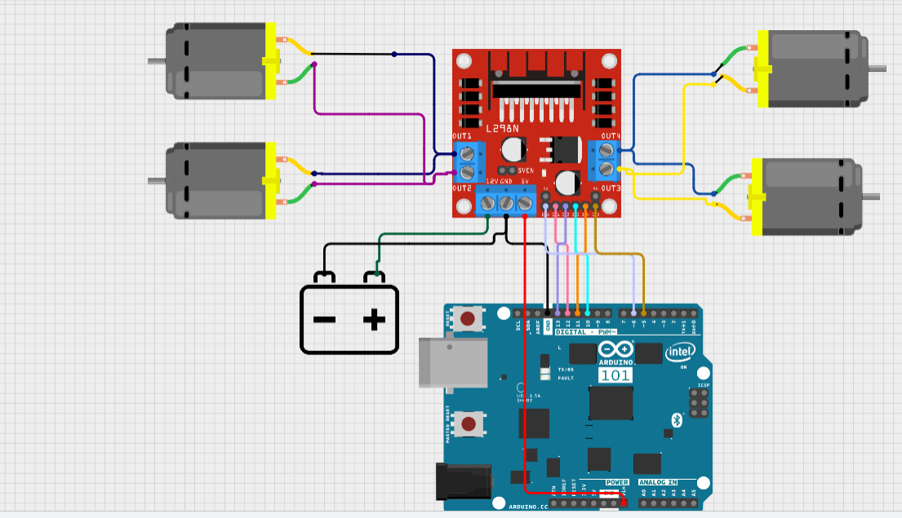
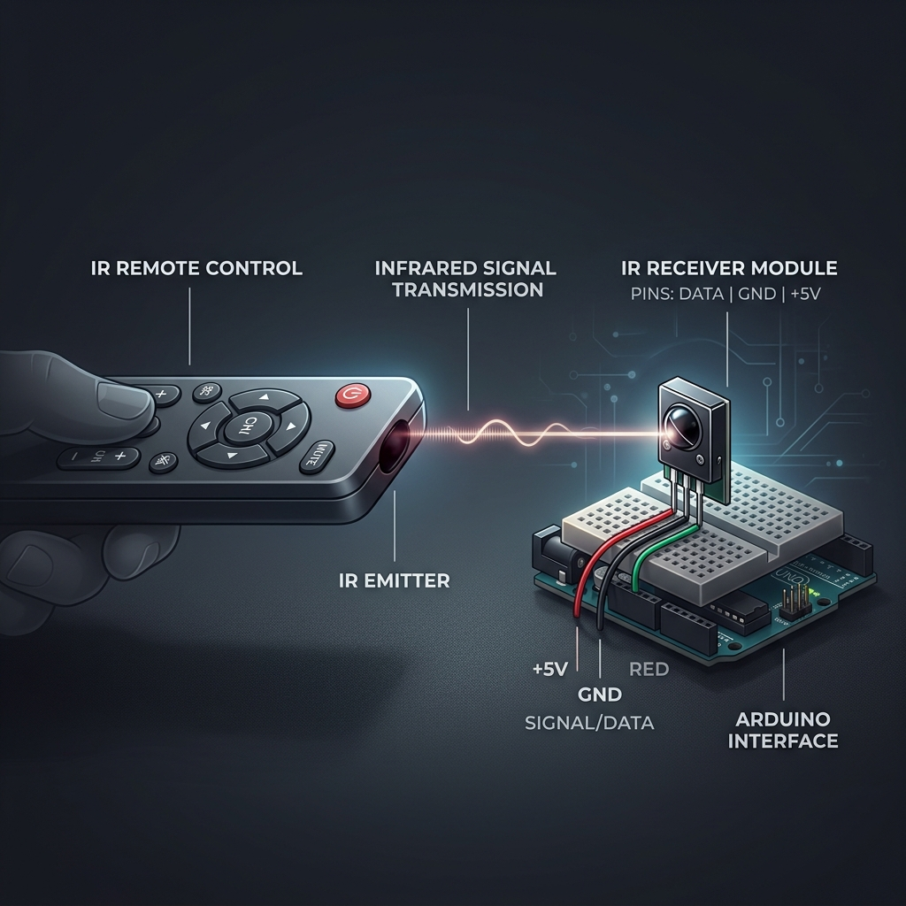

Session 2: Movement + Problem Patterns
Make Something Move
2026-04-11
Session 2
Movement + Problem Patterns — Make Something Move
Agenda
- Part 1 — The Danger of Motors
- Part 2 — Tinkercad Simulation
- Part 3 — The Physical Build
- Part 4 — Programming Movement
- Part 5 — The IR Remote
- Part 6 — Obstacle Course & AI Demo
- Part 7 — Problem Patterns (Closing)
Part 1 — The Danger of Motors
The “Muscle” vs The “Brain”
We learned that the Arduino is the Brain (it sends 0s and 1s using low-voltage signals).
Motors are the Muscles. They require a large flow of electricity (current) to generate magnetic fields strong enough to spin wheels.
- LED Requires: ~20 milliAmps (mA)
- Arduino Pin Maximum: ~40 milliAmps (mA)
- DC Motor Requires: ~500 to 1,000+ milliAmps (mA)
Rule #1 of Robotics
Never Power a Motor Directly From an Arduino Pin!
If you try to draw 1,000 mA from a pin designed to supply only 40 mA, you will instantly melt the internal circuitry of the Arduino chip.
Think of it like trying to fill a swimming pool using a drinking straw. The pressure will destroy the straw.
Motor Logic: Polarity & Direction
The Manual Problem
Can we swap wires while driving?
To make a robot reverse, we would have to stop it, unplug the wires, swap them, and plug them back in.
This is impossible for a computer to do by itself… unless we use electronic switches.
The Solution: The H-Bridge
An H-Bridge is a circuit of 4 electronic switches. By opening and closing different pairs, we can “redirect” the electricity flow without touching a single wire!
- To go Forward: Close S1 and S4.
- To go Backward: Close S2 and S3.
- To Stop: Open all switches.
Caution: Never close S1 and S3 at the same time (Short Circuit!)
The Real H-Bridge
Building an H-Bridge from tiny transistors is hard.
Instead, we use the L298N Module. It’s a “dual” driver that can control two motors.
It gives us 3 types of pins: - IN Pins: Controls Direction (Forward/Backward) - EN Pins: Controls Speed (The Gas Pedal!)

Part 2 — Tinkercad Simulation
Why we simulate before we build
Wiring a motor driver wrong can short-circuit the battery or blow up components. We will use Tinkercad to wire our first virtual motor driver. If we make a mistake, we only blow up pixels!
Your Task
Go to tinkercad.com/circuits and start a new project.
Wiring the L298N Motor Driver
We need to connect 3 types of wires:
- Power In: Battery
+to12V, Battery-toGND. - Motor Out: Motor wires to
OUT1andOUT2. - Logic In: Arduino Pins to
IN1andIN2.
And crucially, Arduino GND must connect to the Battery GND so they share the same 0V reference!

Wait, what is 12V vs 5V?
The driver takes the strong battery power (up to 12V) on one side, and the safe 5V logic signals from the Arduino on the other side.
Writing the Tinkercad Code
Once wired, let’s write the code to spin the motor. We use the exact same digitalWrite commands we learned for LEDs.
Testing the Simulation
Click “Start Simulation” in Tinkercad.
Observe the virtual motor: 1. Does it spin? What RPM is indicated? 2. Change the Code: Make IN1 LOW and IN2 HIGH. What happens to the spin direction?
We reverse the direction of a DC motor by swapping the HIGH and LOW signals!
Part 3 — The Physical Build
Transition to Reality
You proved your logic in Tinkercad. Now it’s time to build the real thing.
Safety First
Do not plug in the battery pack until the instructor inspects your wiring. A short circuit on the battery pack can cause it to overheat.
Step 1: Chassis Assembly
The chassis is the physical body of the robot.
- Mount the DC motors to the frame using the provided brackets.
- Attach the wheels to the motor shafts.
- Secure the caster wheel (the tiny front wheel) to the front of the frame.
- Mount the Arduino and the L298N Motor Driver to the top deck.
Step 2: Power Connections
We must route the power carefully.
From the Battery Pack:
- Red wire (+) \(\rightarrow\) Motor Driver
12V - Black wire (-) \(\rightarrow\) Motor Driver
GND
From the Arduino:
- Arduino
GND\(\rightarrow\) Motor DriverGND - Do not connect Arduino 5V to the motor power!

Step 3: Wiring the Motors
Connect the physical motor wires.
- Left motor red/black wires \(\rightarrow\) Motor Driver
OUT1&OUT2. - Right motor red/black wires \(\rightarrow\) Motor Driver
OUT3&OUT4.
(Don’t worry too much about matching red and black perfectly here; if a motor spins backward later, we can fix it by simply swapping the wires or changing our code!)
Step 4: The Logic Wires
Finally, connect the Arduino pins to the Motor Driver inputs. Use jumper wires:
- Left Motor: Pin 9 \(\rightarrow\)
IN1, Pin 10 \(\rightarrow\)IN2, Pin 11 \(\rightarrow\)ENA - Right Motor: Pin 5 \(\rightarrow\)
IN3, Pin 6 \(\rightarrow\)IN4, Pin 3 \(\rightarrow\)ENB
Speed Control
The ENA and ENB pins control how fast the motors spin. By connecting them to PWM pins (marked with a ~), we can change the speed in our code!
Part 4 — Programming Movement
The Base Code
To drive a car, we must manage 4 pins simultaneously.
// Define our pins
int IN1 = 9; // Left Forward
int IN2 = 10; // Left Backward
int ENA = 11; // Left Speed
int IN3 = 5; // Right Forward
int IN4 = 6; // Right Backward
int ENB = 3; // Right Speed
void setup() {
pinMode(IN1, OUTPUT);
pinMode(IN2, OUTPUT);
pinMode(IN3, OUTPUT);
pinMode(IN4, OUTPUT);
pinMode(ENA, OUTPUT);
pinMode(ENB, OUTPUT);
}Functions: Organizing Logic
Typing digitalWrite four times just to move forward is tedious. In C++, we can create custom functions to bundle commands together.
void forward() {
digitalWrite(IN1, HIGH);
digitalWrite(IN2, LOW);
analogWrite(ENA, 150); // Set speed (0-255)
digitalWrite(IN3, HIGH);
digitalWrite(IN4, LOW);
analogWrite(ENB, 150);
}
void stopCar() {
digitalWrite(IN1, LOW);
digitalWrite(IN2, LOW);
analogWrite(ENA, 0);
digitalWrite(IN3, LOW);
digitalWrite(IN4, LOW);
analogWrite(ENB, 0);
}Driving the Car
Now, our loop() becomes very simple and easy to read!
Instructor Checkpoint
Upload this code to your Arduino. Put the car on the floor. Does it move forward? If it spins in a circle, one of your motors is wired backward! How can you fix it? (Hint: Swap the physical wires, or swap HIGH and LOW in the code).
Exercise: Turning
How does a tank turn? It spins its tracks in opposite directions!
(Apply): Write the code for a turnRight() function.
Solution: To turn Right, the Left wheels must go Forward, and the Right wheels must go Backward.
Part 5 — The IR Remote
Invisible Control
How does a TV remote talk to the TV? It blinks a light that we can’t see!
- Infrared (IR) is light with a frequency lower than red.
- Our eyes can’t see it, but the robot’s receiver can.
- It’s like a flashlight sending a secret Morse code.
The Hardware
To receive signals, we use an IR Receiver Module.
Connections:
- GND → GND
- VCC → 5V
- Signal → Pin 2 (Digital)

Activity: Scanning for Codes
Every remote is different. Before we control the car, we need to know what “Language” your remote speaks.
- Open Arduino IDE.
- Go to File > Examples > IRremote > SimpleReceiver.
- Change
IR_RECEIVE_PINto 2. - Open the Serial Monitor (115200 baud).
- Press buttons and write down the HEX codes for:
- Up Arrow
- Down Arrow
- Left Arrow
- Right Arrow
- OK / Stop
The Logic: Decoding
Once you have your codes, we use a switch statement to decide what to do.
#include <IRremote.hpp>
#define IR_RECEIVE_PIN 2
void setup() {
Serial.begin(115200);
IrReceiver.begin(IR_RECEIVE_PIN, ENABLE_LED_FEEDBACK);
// ... your motor setup from Part 4 ...
}
void loop() {
if (IrReceiver.decode()) {
unsigned long cmd = IrReceiver.decodedIRData.decodedRawData;
Serial.println(cmd, HEX); // See the code in the monitor
handleCommand(cmd); // Custom function to move the car
IrReceiver.resume(); // Ready for next signal
}
}Creating Your Controller
Integrate the functions you wrote in Part 4!
Pro Tip
If your car keeps moving even after you let go of the button, it’s because the IR signal was only sent once. You might need a “Stop” button or a timer!
Part 6 — Obstacle Course & AI
The Obstacle Course Challenge
There is a maze taped out on the floor.
Your Mission:
- Place your car at the START line.
- Write a single sequence of commands in your
loop()to navigate the maze. - You cannot touch the car once it starts!
Hint: Timing is everything. If your turn is exactly 90 degrees, how many milliseconds should you delay()? You must experiment to find the perfect number!
Automating with AI
Writing hundreds of lines of forward(); delay(); turnRight(); takes a long time. What if we asked AI to write a complex sequence for us?
Instructor Demo: Using Cursor to generate a “Dance Routine.”
Watch as your instructor types: “Write an Arduino loop that makes my car drive in a Figure-8 pattern. It should go forward, curve right, go forward, curve left, and repeat.”
Closing: Problem Patterns
This course is about building robots that solve real problems. A moving car is fun, but what use is it? Can it deliver medicine? Can it inspect dangerous pipes?
Homework Prompt:
Interview 2 people this week (family, friends, or teachers). Ask them: “What is your biggest daily frustration?” Write down their answers. Next week, we will see if a moving robot can solve them.